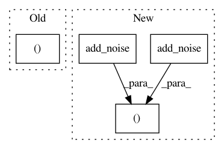

dacd89544ddaf1ab7e572850ebdec3dbaeda0ea0,autokeras/layer_transformer.py,,dense_to_deeper_layer,#Any#,39
Before Change
bias = np.zeros(units)
new_dense_layer = Dense(units, activation="relu")
new_dense_layer.build((None, units))
new_dense_layer.set_weights((weight, bias))
return new_dense_layer
After Change
bias = np.zeros(units)
new_dense_layer = Dense(units, activation="relu")
new_dense_layer.build((None, units))
new_dense_layer.set_weights((add_noise(weight, np.array([0, 1])), add_noise(bias, np.array([0, 1]))))
return new_dense_layer
In pattern: SUPERPATTERN
Frequency: 3
Non-data size: 4
Instances
Project Name: keras-team/autokeras
Commit Name: dacd89544ddaf1ab7e572850ebdec3dbaeda0ea0
Time: 2018-03-09
Author: jhfjhfj1@gmail.com
File Name: autokeras/layer_transformer.py
Class Name:
Method Name: dense_to_deeper_layer
Project Name: keras-team/autokeras
Commit Name: dacd89544ddaf1ab7e572850ebdec3dbaeda0ea0
Time: 2018-03-09
Author: jhfjhfj1@gmail.com
File Name: autokeras/layer_transformer.py
Class Name:
Method Name: wider_pre_conv
Project Name: keras-team/autokeras
Commit Name: dacd89544ddaf1ab7e572850ebdec3dbaeda0ea0
Time: 2018-03-09
Author: jhfjhfj1@gmail.com
File Name: autokeras/layer_transformer.py
Class Name:
Method Name: deeper_conv_block